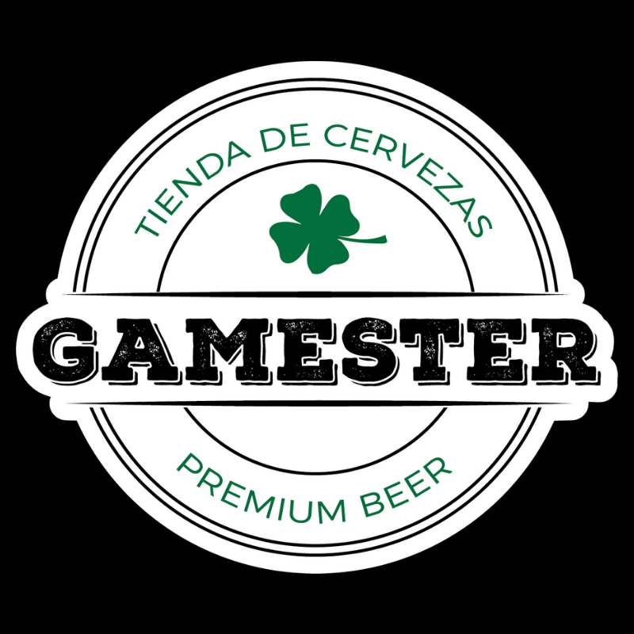

CERVEZA RUDA
BARES AMIGOS DONDE PODES PASAR UN BUEN RATO Y DISFRUTAR NUESTRAS CERVEZAS
-

1908 Pizza y Birra
Lugar moderno de Villa del Parque, con muy buenas alternativas para acompañar nuestras cervezas además de sus exquisitas pizzas. Recomendamos el sandwich de milanesa en pan de pizza, imperdible!
-
Apórt Despensa
En pleno Almagro, se destacan sus productos de calidad tanto como para ingerir allí como para llevar. Hace poco sumaron un local enfrente más grande. No dejen de probar el sandwich de pastrón.
-

Circe, Fábrica de Arte
Espacio cultural que mezlca música, teatro, plástica, letras, comida y bebidas. Propuesta completísima que no tienen que perderse si están por Villa Crespo.
-
Estación Arcos
Genial restaurante de Villa Crespo que cuenta con excelentes birras y una gran carta. Sus hamburguesas se destacan junto a la calidez de sus anfitriones.
-

Gamester
Ubicado en Capitán Sarmiento, Bs. As. Una propuesta moderna para que la juventud local tenga un punto de reunión y disfrute de la mejor comida y cerveza. Si están por la zona no se lo pierdan.
-
Cooperativa Cultural Qi
Cine, ferias, talleres, poesía, exposiciones, entre otras interesantes opciones en pleno Villa Crespo, todo acompañado de nuestras cervezas. Vayan a visitarlos!
-
Rosetti
Actualmente ubicado en la zona del Abasto, Rosetti es un espacio cultural con una gran variedad de actividades que cambian continuamente, y donde se pueden disfrutar nuestras cervezas.
-
Salsarte
Servicio de catering de gran nivel con más de 15 años de historia, que brinda sus servicios en CABA y Bs.As. para eventos de 10 a 2500 personas. Responsabilidad y calidad al extremo.